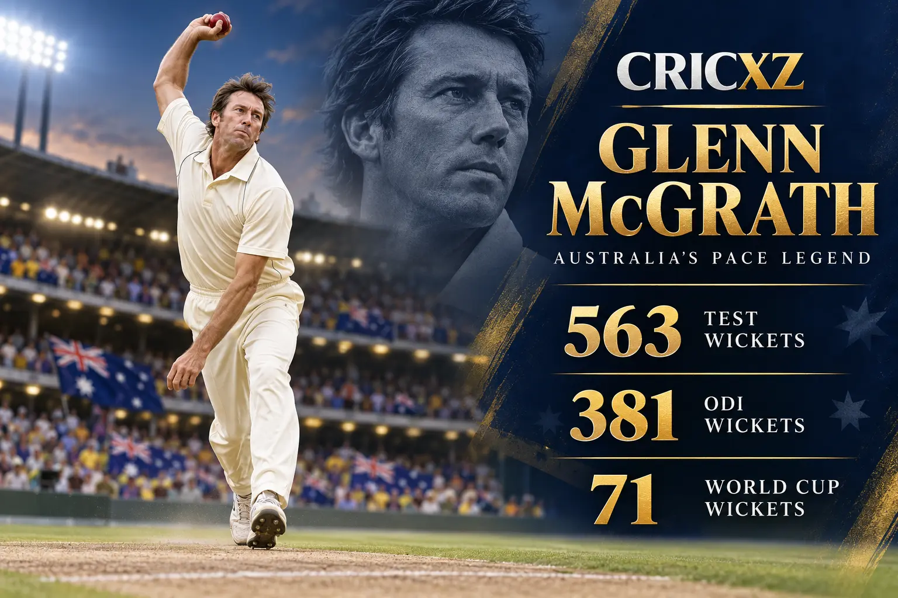
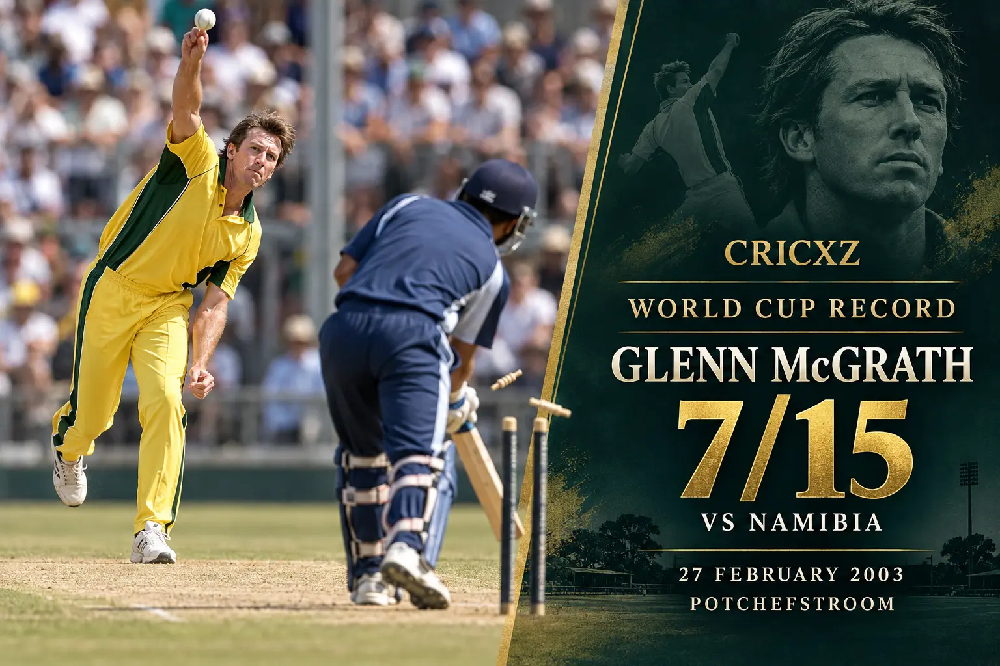

Test Bowling
- Matches
- 124
- Wickets
- 563
- Bowling average
- 21.64
- Best bowling
- 8/24
- Five-wicket hauls
- 29
- Ten-wicket matches
- 3
- Economy rate
- 2.49

Glenn McGrath took 563 Test wickets, 381 ODI wickets and a record 71 World Cup wickets during one of cricket's most accurate fast-bowling careers.
Career statistics are final.
McGrath retired from international cricket after the 2007 World Cup. The figures above were checked against ICC and established statistical records.
McGrath built his career on relentless line and length, steep bounce and subtle seam movement. His control made him a defining member of the Australia teams that dominated Test and one-day cricket from the 1990s into the 2000s.

On 27 February 2003 at Potchefstroom, McGrath took 7/15 against Namibia. The spell remains the best bowling figures in men's World Cup history and helped Australia dismiss Namibia for 45.
McGrath was part of Australia's title-winning campaigns in 1999, 2003 and 2007. At his final tournament in 2007, he took a wicket in every match, finished with a tournament-record 26 wickets and was named Player of the Tournament.
1993 – January 2007
Played 124 Tests and ended his Test career during Australia's 5–0 Ashes victory over England.
1993 – April 2007
Completed a 250-match ODI career in Australia's victorious World Cup final against Sri Lanka.
1996 – 2007
Claimed a record 71 wickets in 39 matches and won three tournament titles.
Took 563 Test wickets and 381 ODI wickets.
Holds the men's tournament record across 39 matches.
Set the tournament record against Namibia in 2003.
Set the record for wickets in a single tournament edition.
Won the trophy with Australia in 1999, 2003 and 2007.
Produced his finest Test figures against Pakistan.
Was inducted following an exceptional international career.
Led the wicket chart with 26 wickets in his final campaign.
Was part of three consecutive Australia World Cup victories.
Retired with more Test wickets than any previous fast bowler.
CricXZ is an independent cricket publication and is not affiliated with the ICC, Cricket Australia or any team.
Read Shane Warne's career records, explore Wasim Akram's statistics, or browse all CricXZ player profiles.